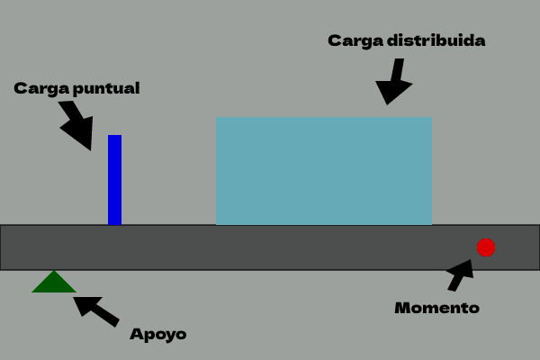

Resolución de Vigas
¿Qué es la Página de las Vigas?
La Página de las Vigas es una herramienta online que te permite resolver vigas indeterminadas de manera fácil y rápida. Ya no tendrás que preocuparte por realizar los cálculos a mano o por utilizar complicados programas de ordenador. Con nuestra página, simplemente deberás seguir unos sencillos pasos y obtendrás los resultados que necesitas.
--------------- ¿Cómo funciona? ---------------
Dibuja tu viga
Utiliza nuestra herramienta de dibujo para crear una representación gráfica de tu viga. Es muy sencillo y no necesitas ser un experto en dibujo.
Avalúa las cargas
Introduce la carga viva y la carga muerta de tu viga, así como la separación entre viguetas. Nuestra herramienta calculará la carga distribuida automáticamente.

Diagrama de cuerpo libre
Utiliza nuestra herramienta de dibujo para crear un diagrama de cuerpo libre de tu viga, y así poder determinar las condiciones en los apoyos.

Resuelve la viga
Utiliza nuestras herramientas de cálculo para obtener las ecuaciones de equilibrio y compatibilidad, crear la matriz, resolver la matriz y obtener las reacciones y los momentos máximos.

Grafica el esfuerzo cortante y momento flector
Finalmente, utiliza nuestra herramienta de gráficos para visualizar el esfuerzo cortante y el momento flector en tu viga, lo que te permitirá entender mejor su comportamiento.

¿Por qué la Página de las Vigas?
La Página de las Vigas es una herramienta poderosa que te permite resolver tus vigas indeterminadas de manera fácil y rápida.
Algunas de sus principales ventajas son:
- Facilidad de uso: No necesitas ser un experto en ingeniería para utilizar nuestra herramienta. Simplemente sigue los pasos y obtendrás los resultados que necesitas.
- Resultados precisos: Nuestra herramienta utiliza los métodos más avanzados para calcular los resultados con una gran precisión.
- Ahorro de tiempo: La Página de las Vigas te permite resolver tus vigas indeterminadas en cuestión de minutos, ahorrándote horas de cálculos manuales o de trabajo con programas complicados.
- Visualización de resultados: Nuestra herramienta te permite visualizar el esfuerzo cortante y el momento flector en tu viga, lo que te permitirá entender mejor su comportamiento.
¿Quieres probar la Página de las Vigas?
No esperes más y empieza a resolver tus vigas indeterminadas de manera fácil y rápida con la Página de las Vigas. Haz clic en el botón de abajo para empezar.
Empezar ahora